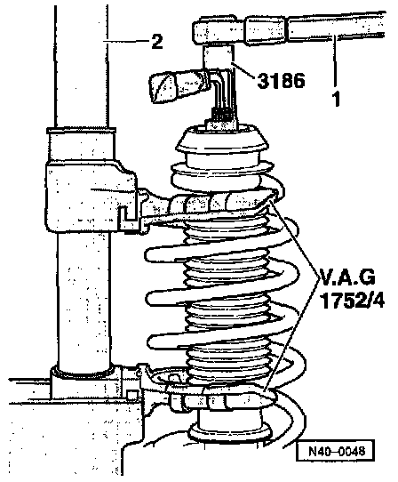

Replacement (Complete)
FrontNOTE:
- From m.y. 1995 the suspension strut for vehicles with Plus suspension (6 cyl.) is also installed in vehicles with Base suspension (4 cyl.).
- For this procedure, use the tools shown in the following illustrations or their equivalents.
- Directly below the component legend are the Fig. numbers. Please refer to these for information regarding removal and installation instructions.

1 Shock absorber
- Can be replaced individually
- After replacing, check wheel alignment
2 Buffer stop
3 Protective sleeve
4 Coil spring
- Removing/installing, refer to Fig. 2
- Note color-code, refer to supplier for applications
- Cuter surface of spring must not be damaged
NOTE: If the color code is not present, the code number on the coil spring can be used to determine the correct part number.
5 Spring plate
6 Bearing
7 Suspension strut mounting
8 Hex nut
- Tighten to: 60 Nm (44 ft. lbs.)
- This nut is loosened when the suspension strut is disconnected from the suspension strut tower
- Each time self-locking nut -10- is removed or loosened, nut -8- must be re-tightened to 60 Nm (44 ft. lbs.)
9 Stop
10 Self-locking nut
- Always replace
- Tighten to: 60 Nm (44 ft. lbs.)
- Loosening/tightening, refer to Fig. 1
NOTE: For this procedure, use the tools shown in the following illustrations or their equivalents

Fig. 1 Suspension Strut To Body, Loosening/Tightening
1 - 7mm hex wrench (commercially available)
2 - VAG 1332
NOTE: After loosening the top hex nut, the lower nut below the stop must be re-tightened to 60 Nm (44 ft. lbs.)

Fig. 2 Coil Spring, Removing/Installing

Fig. 3 Nut for Upper Spring Plate, Removing/Installing
1 - VAG 1332
2 - VAG 1752/1